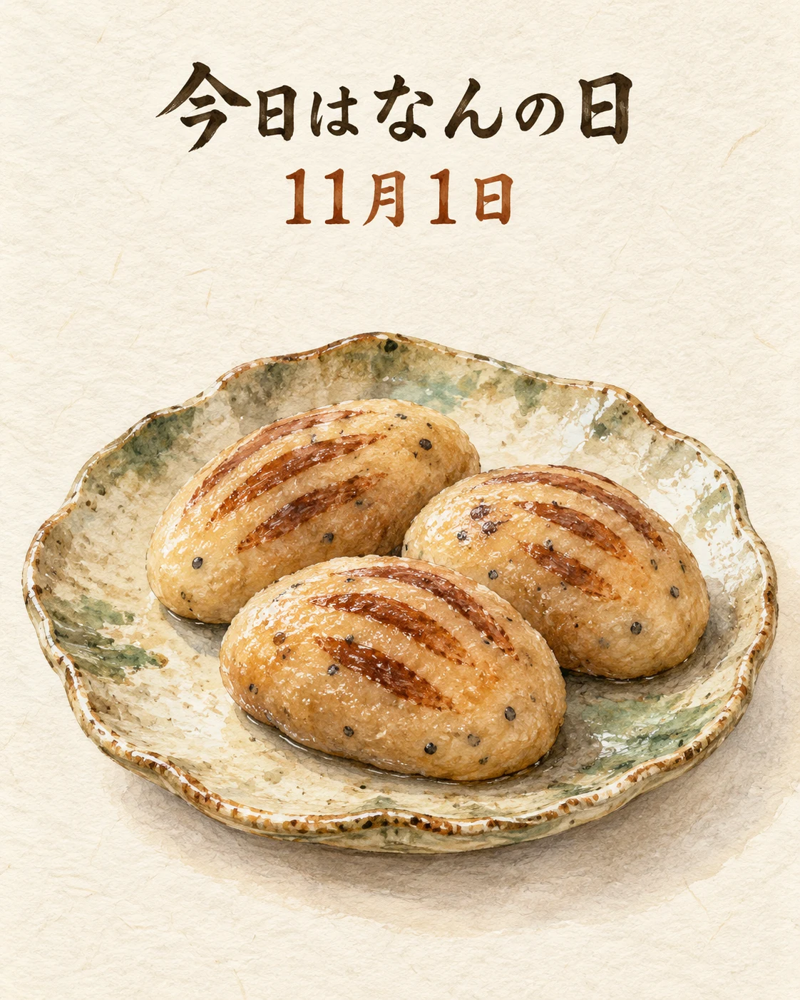

今日は、京都御所の西にある護王神社の「亥子祭（いのこさい）」にちなんだお話です🍁
亥子祭は、平安時代の宮中行事「御玄猪（おげんちょ）」にちなむ祭りです。亥子餅をつく儀式や京都御所への献上を通して、無病息災を祈ります。2026年は11月1日が開催日です。
季節の節目に、食べものへ健やかな暮らしへの願いを込める。京都に受け継がれるこうした心も、和食の文化を形づくる大切な一つですね。
季節の味わいとともに、心ほどけるひとときをお過ごしください✨
京都の食文化と亥子祭
護王神社の亥子祭は毎年11月1日に行われます。2026年の案内は17:00から。神社の行事を紹介するもので、饗応 元の主催・参加・亥子餅の提供を案内するものではありません。行事の最新案内は主催者へご確認ください。
出典：京都市公式 京都観光Navi「亥子祭」、京都府観光連盟「亥子祭」、KYOTOdesign「亥子祭」（2026年11月1日確認）。